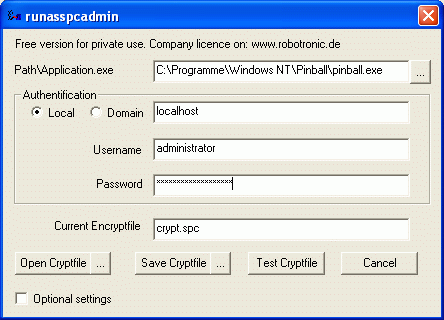

Anleitung RunasSpc
RunasSpc kann wie in folgendem Aufruf gestartet werden:
runasspc.exe /program:"C:\Program Files\Windows
NT\Pinball\pinball.exe"
/domain:"localhost" /user:"testadmin" /password:"password"
Es wird keinerlei Sicherheitsprüfung durchgeführt und das
Passwort liegt im Klartext vor.
Um die Anmeldekennung zu verschlüsseln
müssen Sie eine verschlüsselte Datei generieren.
Das
können Sie über Runasspc.exe (Kommandozeile)
oder mit dem beigelegten Tool Runasspcadmin.(grafische Oberfläche).
Siehe unten >> Beispiele um Cryptfiles zu erstellen
<<
Nachdem Sie ein Cryptfile erstellt haben, können Sie das Cryptfile
mit runasspc wie folgt aufrufen.
A) Wenn das Cryptfiles >> crypt.spc >> heißt.,
könnens Sie es mit einem Doppelcklick auf RunasSpc.exe im selben
Verzeichnis starten.
B) Per Drag and Drop. Ziehen Sie das Cryptfile auf Runasspc.exe.
C) Über die Kommandozeile ohne einen Zwischendialog von Runasspc
>> c:\runasspcEn\runasspc.exe
/cryptfile:"pfad\NameOfCryptfile.spc" /quiet<<
D) Erstellen Sie eine Verknüpfung wie folgendes Beispiel
>> c:\runasspcEn\runasspc.exe
/cryptfile:"pfad\NameOfCryptfile.spc"<<
E) Verbinden Sie die Dateiendung des Cryptfiles mit RunasSpc.exe
(öffnen mit). Sie können auch Ihre eigene Dateiendung
verwenden.
Beispiele um Cryptfiles zu erstellen:
Mit RunasSpc.exe (Konsole)
Sie finden Beispiele in der mitgelieferten Datei sample.bat oder rufen
Sie >> runasspc -h >> auf um Hilfe zu bekommen.
Mit RunasSpcAdmin.exe (Grafische Oberfläche)
Um das Spiel pinball.exe unter der lokalen Anmeldekennung administrator
zu starten

Um das Exceldokument molecularWheigtCalculation.xls unter dem
Domänenaccount departmentuser zu starten.

Um die MSI Datei acdSee 4.0.msi zu installieren

Um eine MSC Datei zu starten wie z.B.die Computerkonsole

Um ein VBScript zu starten.

Einen Registrierungseintrag setzen

Eine Batchdatei wie .cmd oder .bat zu starten
Java installieren mit den Parametern /S /V /qn

Eine Batchdatei mit den Parametern optionA optionB optionC starten

Umgebungsvariablen verwenden

Über rundll32 das Softwareinstallationsapplet aufrufen